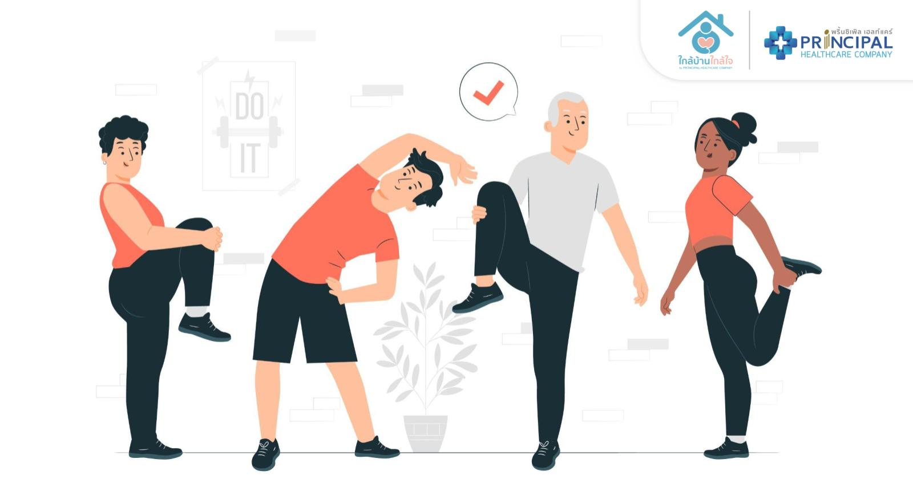

.jpg)
|
ทำไมต้องเลือก “อาหารคลีน”? การเลือกทานอาหารคลีน คือการใส่ใจสุขภาพตั้งแต่จานแรกที่เรากินเข้าไป อาหารคลีนมักเน้นวัตถุดิบสดใหม่ ไม่ผ่านการปรุงแต่งมาก ลดน้ำตาล น้ำมัน และเกลือ ทำให้ร่างกายได้รับสารอาหารครบถ้วน ไม่สะสมไขมันส่วนเกิน อีกทั้งยังช่วยควบคุมน้ำหนักและลดความเสี่ยงจากโรคเรื้อรัง เช่น เบาหวาน ความดันโลหิตสูง และโรคหัวใจ |
.jpg) |
การนอนหลับที่มีคุณภาพช่วยฟื้นฟูร่างกายและสมองได้ดีที่สุด ผู้ใหญ่ควรนอนอย่างน้อยวันละ 7–8 ชั่วโมง การพักผ่อนที่เพียงพอช่วยให้ร่างกายซ่อมแซมตัวเอง เพิ่มสมาธิ และทำให้อารมณ์ดีขึ้น หากนอนไม่พอร่างกายจะอ่อนเพลีย ภูมิคุ้มกันลดลง และเสี่ยงต่อการเกิดโรคเรื้อรัง ควรเข้านอนเป็นเวลา งดใช้มือถือก่อนนอน และทำห้องนอนให้น่านอน
|
|  | การออกกำลังกายวันละนิด สุขภาพดีขึ้นเยอะการออกกำลังกายไม่จำเป็นต้องใช้เวลานาน เพียงวันละ 30 นาที เช่น เดินเร็ว วิ่งเบาๆ ปั่นจักรยาน หรือเล่นโยคะ ก็ช่วยให้หัวใจแข็งแรง เพิ่มการเผาผลาญพลังงาน และลดความเครียดได้ นอกจากนี้ยังทำให้ร่างกายกระฉับกระเฉง ช่วยให้นอนหลับง่ายขึ้น และเสริมสร้างความมั่นใจ ควรออกกำลังกายอย่างสม่ำเสมอ สัปดาห์ละ 3–5 วัน เพื่อผลลัพธ์ที่ยั่งยืน
|